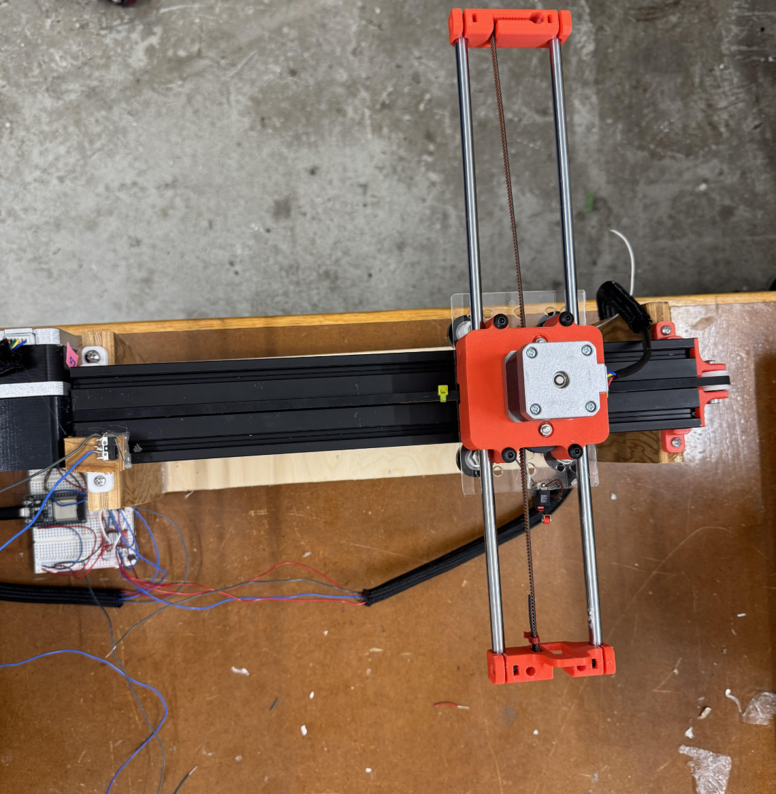
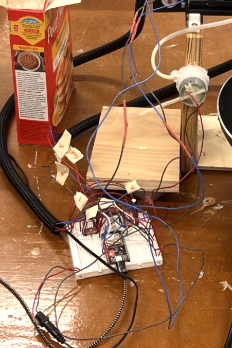
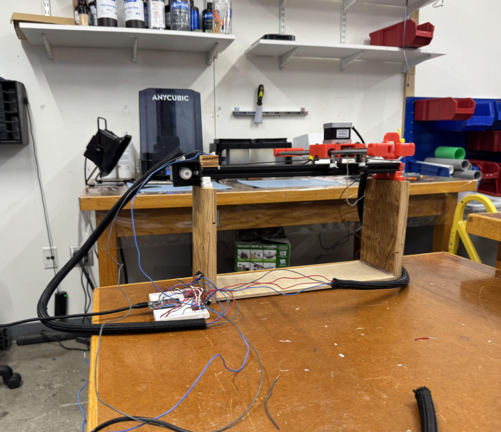
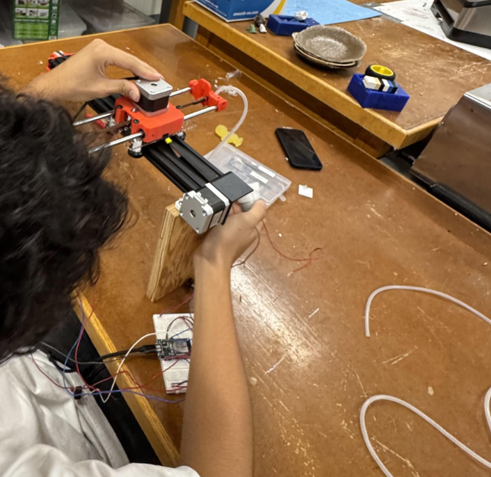
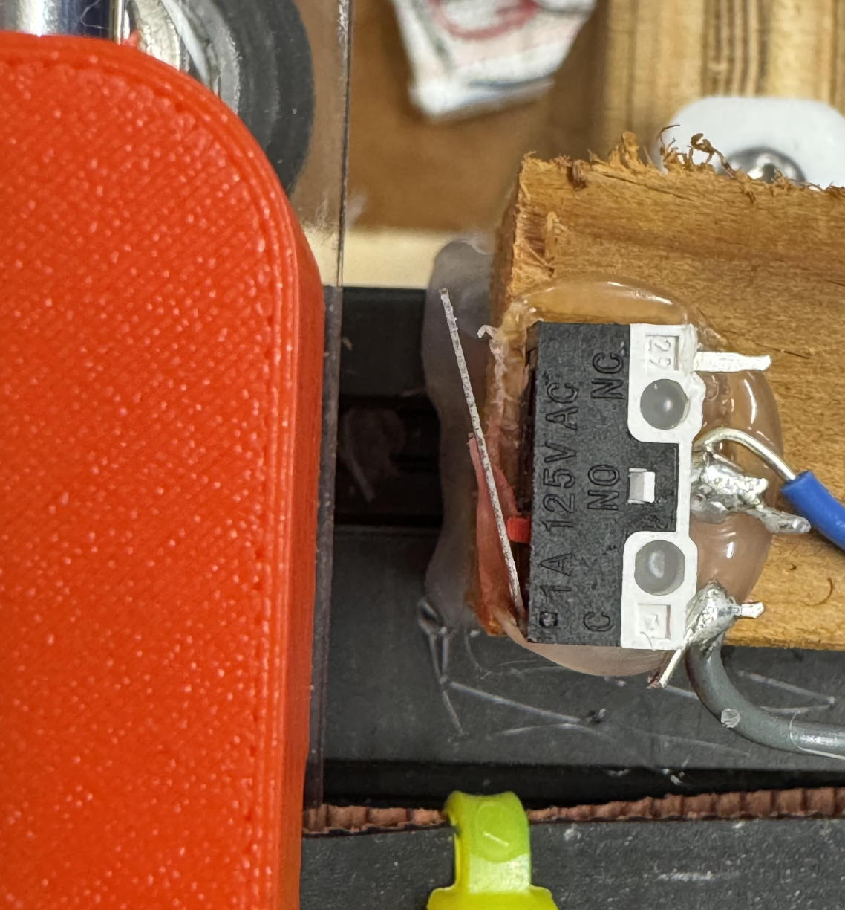
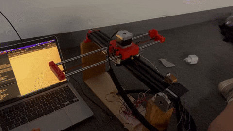
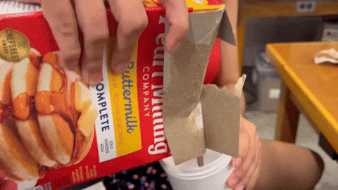
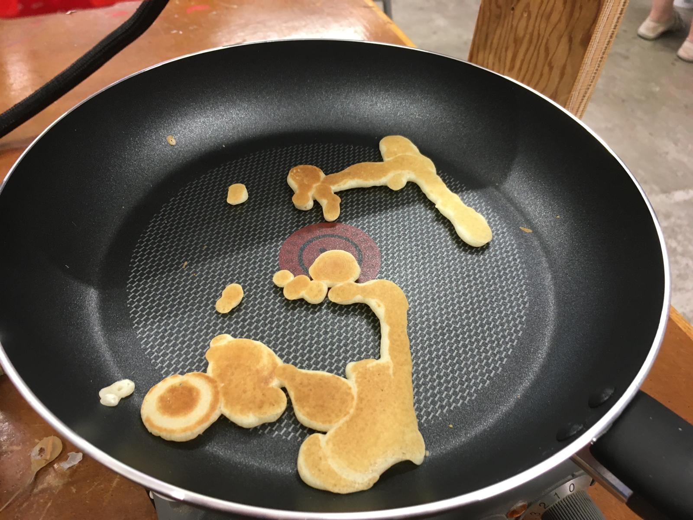
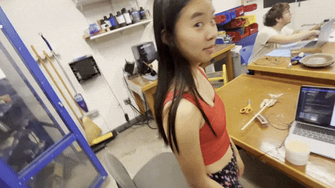
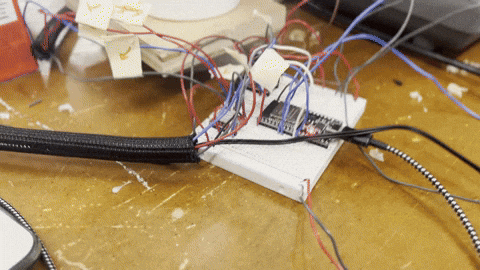

Week 10 & 12 · Machine Building
Pancake Art Machine
A group build with Judy, Mehmet, Jeongwoo, and me.
The Goal
For this assignment our group wanted to do something with a unique end effector, so we ended up going with a pancake machine that could draw shapes in batter on a hot plate. It sounded fun until we started building it, and from then on it was a long string of hardware problems, software problems, and us learning that 3 weeks really isn't that much time for something like this.
X-axis and Y-axis assembly
We started with the mechanics. Mehmet, Jeongwoo, and I worked on the X axis while Judy worked on the Y axis, and the whole time we were just trying to make sure every joint was secure, screws tight, and zip ties where we needed extra support. The frame is what everything else gets bolted onto, so if this part wasn't solid the rest wouldn't matter.


Motors and wiring
After the axes were built Mehmet and Judy attached the stepper motors, and then Judy wired the whole thing up to the microcontroller through the A4988 drivers. The wiring got messy fast, mostly because the stepper motors have like 4 wires each and we didn't have enough wire colors to keep them straight, so the colors on the motor side didn't match the colors on the breadboard side. Mehmet found a casing that bundled the wires together cleanly, but then we had a new problem, you couldn't tell which wire was which once they went into the casing. Judy fixed it by labeling them with masking tape and a sharpie, which sounds basic but it saved us a ton of time later when wires kept getting unplugged.


Support structure and limit switches
The machine had to sit above a pan on a hot plate, so we needed a support that lifted the whole frame up off the table. Jeongwoo, Mehmet, and I cut wood, nailed it, hot glued it, and put together a stand that would hold the machine at the right height over the pan. While we were doing that Judy was on the limit switches, which the machine needs in order to "home" itself back to a known starting position. Without homing the coordinates drift every time we power cycle the board.




Things start going wrong
Once the support was built we had to move the machine around a lot to test fitment, and every time we moved it some wires would pop loose. If I could redo this project I would solder the breadboard connections from the start, because at one point during all the plug and unplug, someone wired the barrel jack (the 12V input) the wrong way and shorted the ESP32 dev module. That happened right at the end of a lab, so Judy took it home and swapped in a WROOM. She had to redo a bunch of the wiring because the WROOM has a different pinout, and then she got the X axis responding but not the Y axis. Turned out the A4988 driver for Y had died too, and while she was swapping that out a ground wire came loose without anyone noticing, and the second microcontroller shorted as well. So we burned through 2 microcontrollers and 1 driver before we even got the thing reliably running.

Only the X axis responding to the canvas drawing
First circle
After swapping the A4988 and reworking some of the code, the machine could draw freehand from the webpage again. Judy then added a "circle" link to the webpage that uses math.h to draw a 4 cm diameter circle, plus a "home" button that runs the limit switch homing routine. Jeongwoo, Mehmet, and I tuned the offset so the circle would actually land inside the pan and not 6 inches off to the side. After enough trial and error the machine could draw a circle in air:
Adding batter
Once the circle worked in air we hooked the pump up to the support and ran a real test with pancake batter. The first run looked like this:
The shape was wrong, it came out as an oval instead of a circle. The reason was the stepper pulleys on X and Y had different tooth counts, so the X axis moved further per step than the Y axis. The horizontal span ended up about 1.5x bigger than the vertical span. Judy fixed it in the code by stretching the X output:
long x = circleCenterX + circleRadiusSteps * cos(angle) * (3.0/2.0);
And on the next run we got a real circle in batter:
It was watery and barely visible but it was a circle and we were happy.
Better batter
From there it was just dialing in the batter consistency until the line on the pan was actually readable. Too thin and it puddled, too thick and the pump would clog. After a few rounds of mixing we landed on a ratio that came out clean.

Freehand mode
The machine also responds to whatever you draw on the canvas in the browser, the websocket pipes the mouse positions to the ESP32 which moves the steppers in real time. The freehand lines come out a little choppy because the machine moves so fast that the batter doesn't always have time to settle, but it works.

The setup


The code
All of this runs on a single sketch on the ESP32. It hosts a webpage with a canvas you draw on, runs a websocket to receive coordinates, drives the 2 steppers through AccelStepper, and reads the 2 limit switches for homing. Judy wrote it.
#include <WiFi.h>
#include <AsyncTCP.h>
#include <ESPAsyncWebServer.h>
#include <AccelStepper.h>
#include <ezButton.h>
#include <math.h>
#define PI 3.14159265
const float RADIUS_CM = 3.3;
const int STEPS_PER_CM = 50; // update based on your hardware
bool isDrawingCircle = false;
int circleSegment = 0;
int circleSegmentsTotal = 150;
float circleRadiusSteps = RADIUS_CM * STEPS_PER_CM;
long circleCenterX = 0;
long circleCenterY = 0;
bool isBackX = false;
bool isBackY = false;
bool isNotOrigin = false;
void drawCircleFromCenter(float radius_cm, int segments = 100);
AccelStepper stepper_X(1, 27, 14);
AccelStepper stepper_Y(1, 23, 22);
ezButton limitSwitch(32);
ezButton limitSwitch2(33);
const char* ssid = "MAKERSPACE";
const char* password = "12345678";
String message = "";
AsyncWebServer server(80);
AsyncWebSocket ws("/ws");
String steps_X;
String steps_Y;
int penDown = 0;
bool newRequest = false;
const char index_html[] PROGMEM = R"rawliteral(
<!DOCTYPE html>
<html>
<head>
<title>Sidewalk Plotter Control</title>
<meta name="viewport" content="width=device-width, initial-scale=1">
</head>
<body>
<div class="topnav">
<h3>Sidewalk Plotter Control</h3>
</div>
<div class="content">
<canvas id="canvas" width="600" height="400" style="border: 1px solid black;">
Your browser does not support the HTML 5 Canvas.
</canvas>
<p>Click <a href="#" onclick="sendCircle()">HERE</a> for circle</p>
<p>Click <a href="#" onclick="sendHome()">HERE</a> to home the plotter</p>
<label class="switch">
<input type="checkbox" onclick="togglePen()">
<span class="slider round">Pen Down</span>
</label>
</div>
</body>
<script>
var gateway = `ws://${window.location.hostname}/ws`;
var websocket;
window.addEventListener('load', onload);
var pointsX = [];
var pointsY = [];
var penDown = 0;
var canvas = document.querySelector('canvas'),
ctx = canvas.getContext('2d');
ctx.lineWidth = 2;
ctx.strokeStyle = 'red';
canvas.addEventListener("click", function (evt) {
var mousePos = getMousePos(canvas, evt);
if (penDown == 0){
pointsX.pop();
pointsY.pop();
}
pointsX.push(mousePos.x);
pointsY.push(mousePos.y);
websocket.send(mousePos.x+"&"+mousePos.y+"-"+penDown);
ctx.beginPath();
for (var i = 0; i < pointsX.length; i++){
ctx.lineTo(pointsX[i], pointsY[i]);
}
ctx.stroke();
}, false);
function getMousePos(canvas, evt) {
var rect = canvas.getBoundingClientRect();
return { x: evt.clientX - rect.left, y: evt.clientY - rect.top };
}
function togglePen(){ penDown = penDown == 0 ? 1 : 0; }
function sendCircle() { websocket.send("circle"); }
function sendHome() { websocket.send("home"); }
function onload(event) { initWebSocket(); }
function initWebSocket() {
websocket = new WebSocket(gateway);
websocket.onopen = onOpen;
websocket.onclose = onClose;
websocket.onmessage = onMessage;
}
function onOpen(event) { console.log('Connection opened'); }
function onClose(event) { setTimeout(initWebSocket, 2000); }
function onMessage(event) { console.log(event.data); }
</script>
</html>
)rawliteral";
void initWiFi() {
WiFi.mode(WIFI_STA);
WiFi.begin(ssid, password);
while (WiFi.status() != WL_CONNECTED) { delay(1000); }
Serial.println(WiFi.localIP());
}
void handleWebSocketMessage(void *arg, uint8_t *data, size_t len) {
AwsFrameInfo *info = (AwsFrameInfo*)arg;
if (info->final && info->index == 0 && info->len == len && info->opcode == WS_TEXT) {
data[len] = 0;
message = (char*)data;
if (message == "circle") {
isDrawingCircle = true;
circleSegment = 0;
circleSegmentsTotal = 150;
circleRadiusSteps = RADIUS_CM * STEPS_PER_CM;
circleCenterX = stepper_X.currentPosition();
circleCenterY = stepper_Y.currentPosition();
if (message == "home") {
isNotOrigin = true;
return;
}
stepper_X.moveTo(circleCenterX + circleRadiusSteps);
stepper_Y.moveTo(circleCenterY);
return;
}
}
steps_X = message.substring(0, message.indexOf("&"));
steps_Y = message.substring(message.indexOf("&") + 1, message.indexOf("-"));
penDown = message.substring(message.indexOf("-") + 1, message.length()).toInt();
newRequest = true;
}
void onEvent(AsyncWebSocket *server, AsyncWebSocketClient *client, AwsEventType type, void *arg, uint8_t *data, size_t len) {
switch (type) {
case WS_EVT_DATA:
handleWebSocketMessage(arg, data, len);
break;
default: break;
}
}
void initWebSocket() {
ws.onEvent(onEvent);
server.addHandler(&ws);
}
void setup() {
Serial.begin(115200);
initWiFi();
initWebSocket();
limitSwitch.setDebounceTime(50);
limitSwitch2.setDebounceTime(50);
server.on("/", HTTP_GET, [](AsyncWebServerRequest * request) {
request->send_P(200, "text/html", index_html);
});
server.begin();
stepper_X.setMaxSpeed(1000.0);
stepper_X.setAcceleration(1000.0);
stepper_Y.setMaxSpeed(1000.0);
stepper_Y.setAcceleration(1000.0);
}
void loop() {
limitSwitch.loop();
limitSwitch2.loop();
if (isNotOrigin) {
stepper_X.setSpeed(-300);
stepper_Y.setSpeed(-300);
while (!limitSwitch.isPressed() || !limitSwitch2.isPressed()) {
if (!limitSwitch.isPressed()) stepper_X.runSpeed();
if (!limitSwitch2.isPressed()) stepper_Y.runSpeed();
}
stepper_X.setCurrentPosition(0);
stepper_Y.setCurrentPosition(0);
isNotOrigin = false;
}
if (newRequest) {
stepper_X.moveTo(steps_X.toInt());
stepper_Y.moveTo(steps_Y.toInt());
newRequest = false;
ws.cleanupClients();
}
stepper_X.run();
stepper_Y.run();
if (isDrawingCircle) {
if (stepper_X.distanceToGo() == 0 && stepper_Y.distanceToGo() == 0) {
if (circleSegment >= circleSegmentsTotal) {
isDrawingCircle = false;
} else {
float angle = 2 * PI * (circleSegment + 1) / circleSegmentsTotal;
long x = circleCenterX + circleRadiusSteps * cos(angle) * (3.0/2.0);
long y = circleCenterY + circleRadiusSteps * sin(angle);
stepper_X.moveTo(x);
stepper_Y.moveTo(y);
circleSegment++;
}
}
}
}
void drawCircleFromCenter(float radius_cm, int segments) {
long centerX = stepper_X.currentPosition();
long centerY = stepper_Y.currentPosition();
float radiusSteps = radius_cm * STEPS_PER_CM;
stepper_X.moveTo(centerX + radiusSteps);
stepper_Y.moveTo(centerY);
while (stepper_X.distanceToGo() != 0 || stepper_Y.distanceToGo() != 0) {
stepper_X.run();
stepper_Y.run();
}
for (int i = 1; i <= segments; i++) {
float angle = 2 * PI * i / segments;
long x = centerX + radiusSteps * cos(angle) * (3.0/2.0);
long y = centerY + radiusSteps * sin(angle);
stepper_X.moveTo(x);
stepper_Y.moveTo(y);
while (stepper_X.distanceToGo() != 0 || stepper_Y.distanceToGo() != 0) {
stepper_X.run();
stepper_Y.run();
}
}
}
Reflection
This build taught me more than any other week. Not really the technical part, that's just stepper motors and a couple of A4988s, but the people part. With 4 of us working on the same machine we needed way better communication than we had, and we should have divided the work more evenly from the start. The whole hot glue support stage was kind of disjointed and we lost time on it. That said, I'd do another group build like this in a heartbeat, watching the machine actually pour batter in a circle after all the dead microcontrollers was worth it.
Judy's full writeup
Judy hosts the team's main documentation page: Judy Wu's documentation →